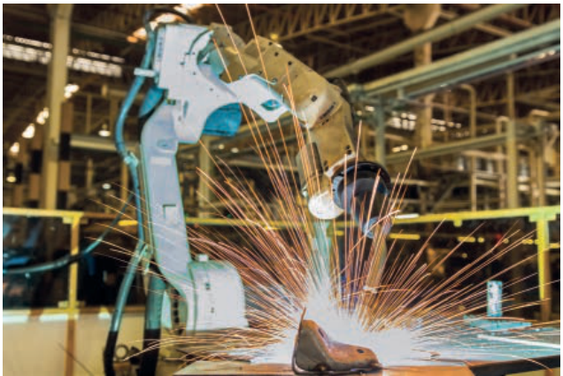
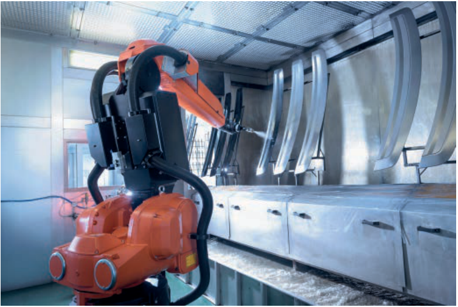
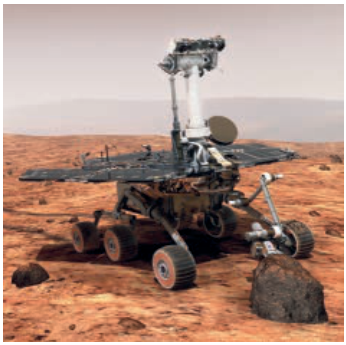
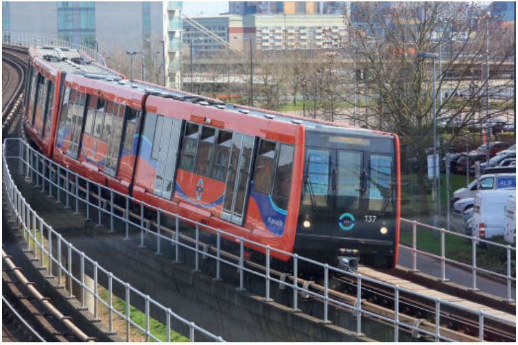
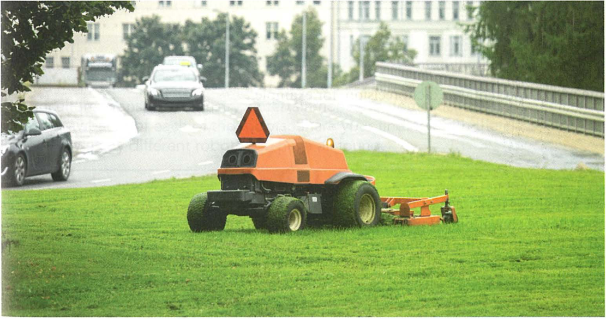
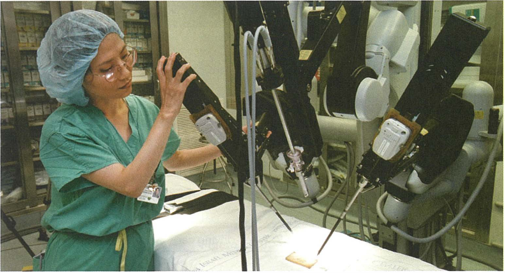
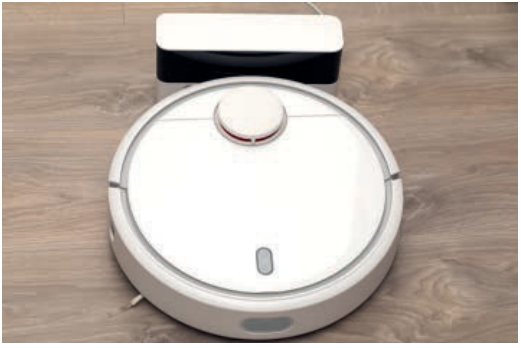
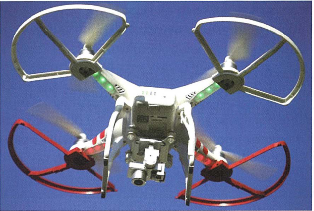

← → Flip slides · F Full screen · Esc Exit full screen
6.2 · Overview · 01
Robotics
How programmable machines sense and act.
Syllabus 6.2: robot characteristics, uses and evaluation.

Hodder p.230, Figure 6.12
Check your understanding
What makes this welding machine a robot?
Show model answer
It has a mechanical structure, electrical components and a program that controls its actions.
Teacher notes / 教师提示
Students explain their reasoning before opening the model answer. Accept equivalent precise wording.
Source: Hodder pp.230–231. Cambridge pp.132–135. Original teaching questions and model answers are not official mark schemes.
6.2 · Characteristics · 02
Characteristics of a robot
A robot combines physical parts with a program that controls its actions.
Characteristic
Example in a mobile robot
Mechanical structure
Chassis, wheels and a gripping arm
Electrical components
Sensors, microprocessor and actuators
Programmable
Instructions control movement and decisions
Check your understanding
What tells the robot which sequence of actions to perform?
Show model answer
The program, which the controller executes.
Teacher notes / 教师提示
Students explain their reasoning before opening the model answer. Accept equivalent precise wording.
Source: Hodder p.231. Cambridge p.132. Original teaching questions and model answers are not official mark schemes.
6.2 · Components · 03
Sensors, processing and action
A warehouse robot detects a box and places it on a shelf.
Each component has a different role in this original example.
Part
Role in the warehouse
Sensor
Measures distance to the shelf
Microprocessor
Compares the distance with the required position
Actuator
Operates the motor that moves the arm
Check your understanding
Which part decides whether to stop the motor?
Show model answer
The microprocessor processes the sensor reading and sends a control signal to the actuator.
Teacher notes / 教师提示
Students explain their reasoning before opening the model answer. Accept equivalent precise wording.
Source: Hodder pp.231–232. Cambridge p.132. Original teaching questions and model answers are not official mark schemes.
6.2 · Programming · 04
Programming a robot arm
A program specifies the arm movements and when to spray.
An operator can teach a sequence of movements for the controller to record.
Sensors help the controller respond when no car body is present.

Hodder p.232, Figure 6.18
Check your understanding
Why should the robot check for a car before spraying?
Show model answer
It avoids wasting paint and spraying into an empty or unsafe area.
Teacher notes / 教师提示
Students explain their reasoning before opening the model answer. Accept equivalent precise wording.
Source: Hodder p.232. Original teaching questions and model answers are not official mark schemes.
6.2 · Control · 05
Autonomous and human-controlled robots
An autonomous robot uses its program and sensor readings to act without direct human control.
A remotely controlled robot follows instructions from an operator.
A robot can combine automatic actions with human supervision.

Hodder p.231, Figure 6.16
Check your understanding
Does every robot need artificial intelligence?
Show model answer
No. Many robots repeat programmed tasks without learning or simulating intelligent reasoning.
Teacher notes / 教师提示
Compare a programmed factory arm, a remotely controlled drone and an autonomous rover. Keep robotics and AI distinct.
Source: Hodder p.231. Cambridge p.132. Original teaching questions and model answers are not official mark schemes.
6.2 · Industry · 06
Robots in industry
A factory uses robots for welding, painting and placing components.
Evaluation links a feature to its effect on this factory.
Feature
Possible effect
Precise repetition
More consistent welds and less waste
Hazardous work
Less worker exposure to heat or fumes
Setup and upkeep cost
Requires funding and skilled technicians
Changed staffing needs
Some jobs disappear and other jobs require retraining
Check your understanding
Why can a high initial cost still be worthwhile?
Show model answer
If output and consistency improve enough over time, the savings may outweigh purchase, programming and maintenance costs.
Teacher notes / 教师提示
Students explain their reasoning before opening the model answer. Accept equivalent precise wording.
Source: Hodder pp.232–233. Cambridge p.134. Original teaching questions and model answers are not official mark schemes.
6.2 · Transport · 07
Robots in transport
An autonomous train uses control systems to manage movement and stopping.
Consistent speed control can improve punctuality.
A control fault may disrupt services, so safe stopping and human response procedures matter.

Hodder p.235, Figure 6.19
Check your understanding
Give a transport benefit with a clear reason.
Show model answer
Consistent automatic speed and stopping control can keep the service closer to its timetable.
Teacher notes / 教师提示
Students explain their reasoning before opening the model answer. Accept equivalent precise wording.
Source: Hodder pp.234–235. Cambridge p.134. Original teaching questions and model answers are not official mark schemes.
6.2 · Agriculture · 08
Robots in agriculture
Robots can mow, plant or remove weeds along a planned route.
Precise repeated work can save time and reduce wasted materials.
Uneven ground, obstacles and changing conditions make sensing important.

Cambridge University Press p.133, Figure 6.8
Check your understanding
Why is an obstacle sensor useful on an automatic mower?
Show model answer
It detects an object or person so the controller can stop or change direction.
Teacher notes / 教师提示
Students explain their reasoning before opening the model answer. Accept equivalent precise wording.
Source: Hodder p.236. Cambridge p.133. Original teaching questions and model answers are not official mark schemes.
6.2 · Medicine · 09
Robots in medicine
A surgeon can control robotic instruments for precise movements.
Remote control can give access to a specialist who is elsewhere.
Equipment faults or connection loss require a safe response and a backup plan.

Cambridge University Press p.133, Figure 6.7
Check your understanding
Why is “robots always improve safety” too strong?
Show model answer
Faulty software, failed equipment or communication problems can introduce risks, even when precision improves.
Teacher notes / 教师提示
Students explain their reasoning before opening the model answer. Accept equivalent precise wording.
Source: Hodder pp.237–238. Cambridge pp.132–133. Original teaching questions and model answers are not official mark schemes.
6.2 · Domestic use · 10
Domestic robots
A vacuum robot uses sensors to detect obstacles and control its route.
It saves the user time on repetitive cleaning.
It still needs charging, emptying and monitoring, and may struggle with steps.

Hodder p.230, Figure 6.13
Check your understanding
Name one sensor input and one actuator output.
Show model answer
Input: distance to an obstacle. Output: a motor turns a wheel to change direction.
Teacher notes / 教师提示
Students explain their reasoning before opening the model answer. Accept equivalent precise wording.
Source: Hodder pp.238–239. Cambridge p.135. Original teaching questions and model answers are not official mark schemes.
6.2 · Entertainment · 11
Robots in entertainment
A camera drone can record a view from above.
Programmable robots can move characters or cameras repeatedly.
Loss of control can cause a collision, so safe operation matters.

Cambridge University Press p.135, Figure 6.10
Check your understanding
What connects a robot toy and an industrial robot?
Show model answer
Both have a physical structure, electrical components and programmable control, although their tasks differ.
Teacher notes / 教师提示
Students explain their reasoning before opening the model answer. Accept equivalent precise wording.
Source: Hodder p.239. Cambridge pp.134–135. Original teaching questions and model answers are not official mark schemes.
6.2 · Exam technique · 12
Benefits and limitations in context
A useful answer explains how a feature affects the named task.
Weak general point
Explanation linked to a task
Robots are accurate
A welding robot repeats the required position, reducing faulty joins
Robots are expensive
A small farm may struggle to pay for the machine and maintenance
Robots are dangerous
A failed obstacle sensor may allow a mobile robot to collide
Check your understanding
Improve “the robot is faster” for a packing line.
Show model answer
The robot can repeat the packing movement quickly and consistently, increasing the number of boxes packed per hour.
Teacher notes / 教师提示
Students explain their reasoning before opening the model answer. Accept equivalent precise wording.
Source: Syllabus 6.2, objective 3. Original teaching examples. Original teaching questions and model answers are not official mark schemes.
6.2 · Independent task · 13
Warehouse design task
A robot moves boxes between a conveyor and shelves.
Explain its structure, one sensor and one actuator.
Evaluate one benefit and one limitation for this warehouse.
Check your understanding
How could the robot handle an obstructed route?
Show model answer
A proximity sensor detects the obstruction. The controller stops the drive motor or selects a safe alternative route.
Teacher notes / 教师提示
Give pairs three minutes to draw or describe the system. Require a specific component and a reason for each evaluation point.
Source: Original task applying syllabus 6.2. Original teaching questions and model answers are not official mark schemes.
6.2 · Worked answer · 14
Warehouse model answer
Each point refers to the warehouse task.
Point
Example answer
Structure
Wheeled chassis and a gripping arm carry boxes
Input and output
Distance sensor checks position, motors move the arm
Benefit
Repetitive lifting reduces workers’ exposure to heavy loads
Limitation
A breakdown may stop deliveries until technicians repair it
Check your understanding
Why is “sensor detects a box” incomplete as a full control explanation?
Show model answer
It describes the input only. A full answer also explains processing and the resulting actuator action.
Teacher notes / 教师提示
Students explain their reasoning before opening the model answer. Accept equivalent precise wording.
Source: Original model answer, not an official mark scheme. Original teaching questions and model answers are not official mark schemes.
6.2 · Retrieval · 15
Key terms
Use each term for its precise role.
Term
Meaning
Robotics
Design, construction and operation of robots
Sensor
Device that measures a physical property
Actuator
Component that produces physical action
Autonomous
Operates without direct human control
Programmable
Can execute stored instructions for a task
Check your understanding
Which term describes the study of designing and operating robots?
Show model answer
Robotics.
Teacher notes / 教师提示
Students explain their reasoning before opening the model answer. Accept equivalent precise wording.
Source: Syllabus 6.2. Hodder pp.230–231. Cambridge p.132. Original teaching questions and model answers are not official mark schemes.
6.2 · Review · 16
Exit check
Describe the three main characteristics of a robot.
Choose one application and explain a benefit and a drawback.
Explain why a robot might use sensors even when it does not use AI.
Check your understanding
What should a complete evaluation include?
Show model answer
A specific use, a benefit with its reason, and a limitation with its effect in that context.
Teacher notes / 教师提示
Use students’ answers to decide whether to revisit components, applications or contextual evaluation.
Source: Syllabus 6.2. Original retrieval questions. Original teaching questions and model answers are not official mark schemes.
Sources and practice
Content follows the supplied Cambridge IGCSE Computer Science 0478 syllabus for 2026–2028, Version 6, section 6.2. Textbook images retain their source credits. Questions and model answers are original teaching material.